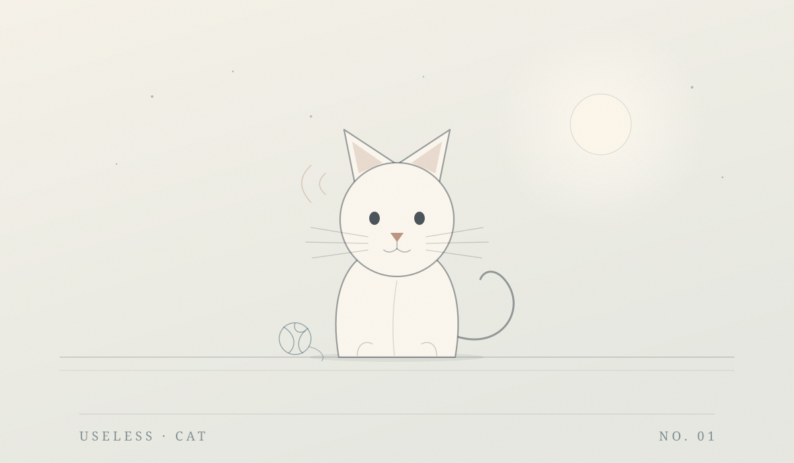

房间三 · 机器 / Machine
两台没什么用的机器
一台只会把开关关掉，一个只会接住光。它们都不解决问题，也不提高效率—— 但有时候，人需要一件完全无意义、但可以反复做的小事。

Toy 01 · 数字玩具
它只会把开关关掉
你打开，它关上。它没有别的功能，也不需要被理解。
按一下。它会替你关掉。
它已经关掉你 0 次
Toy 02 · 小游戏
拾光
四十五秒，用船头的一盏灯接住落下来的光点。没有输，只有收集。
时间 45
光 0
最好 0
← → 移动 也可以直接用手指或鼠标拖 空格 = 开始 / 重来